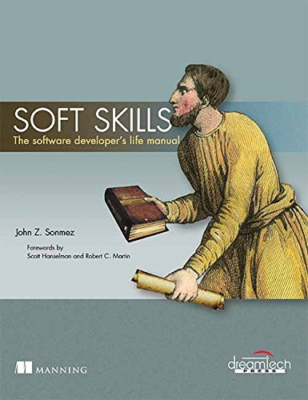

Book - The software developer’s life manual - John Z. Sonmez
I recently finished reading the book Soft Skills: The software developer’s life manual - John Z. Sonmez. It is a really interesting and original book, different from what I’m used to read. I uploaded all the clippings I had about this book but I wanted to analyze it in a post. It gives you advice in very different areas of life like sport or personal finance. It is divided in 7 sections:
- Career
- Marketing yourself
- Learning
- Productivity
- Financial
- Fitness
- Spirit

The most interesting ones for me were the first 2. I’m not saying the rest of the book was boring (I wouldn’t have finished it) but for example I skimmed through the Fitness or Financial sections since I already read much more detailed books in this area. This is a feeling I got in general with the whole book, it feels like an introduction to every section, if you want to go deep into any of the areas you have to get books that focun on them. On the other hand, is really nice that it does not get lost into too much detail. It goes straight to the point in what matters to us software developers.
Something I loved about the book is that every chapter has a “Taking action” section with things to do to practice what you learnt.
Main takeaways
I’m going to enumarate the main points I found interesenting. Of course this is just an opinion, for example there are full chapters about freelancing or startups which is something I’m not interesed in currently.
Career
- It’s better to think of an employer as a customer for your business of developing software.
- Set long term goals (vision), short term goals and track them.
- People skills, we need them more than we think. He makes a brief summary of the concepts in one of my favourite books How to Win Friends and Influence People by Dale Carnegie.
- Everybody wants to feel important.
- Never criticize.
- Think about what the other person wants.
- Avoid arguments.
- Interview tips, like trying to meet and connect with people working in the company you plan to get interviewed at.
- Salary negotiation! It reminded me this great article also the Getting to Yes book (this is negotiation in general). Key thing to remember, first one to says a number, loses
- Pick and specialization, try to become an expert in an area but don’t become religious about technology.
- Visibility.
- Keep a daily log of your activities.
- Offer to give presentations or trainigs.
- Speak up.
- Be seen.
- Fake it till you make it.
- Hire a resume writer or at least take it very seriously.
Marketing yourself
- Create a personal brand
- Create a logo, like sucessful brands do.
- Create a blog and write often (part of the reason I’m writing on this blog again is reading this chapter)
- Do presentations and trainings
- Don’t be afraid to look like an idiot. If you want to be successful at your efforts, you have to learn to stop caring about what people think. You have to learn how to not be afraid to look like an idiot.
Learning
From this section I loved the concept of learning 20% of the concepts in an area should allow you to cover 80% of the daily usage. Also the concept of finding a mentor and becoming a mentor of someone: One of the greatest ways to learn—perhaps the only way to learn anything deeply—is to teach.
Productivity
- Focus. Nowadays we have too much distractions and we are machines very inefficient when multitasking.
- Quotas. Stablish a minimum goal per period of time. For instance, I have the quota of creating a blog post per week.
- Self-accountability. Internal motivation is key to be productive. You should be able to do work without anybody telling you to.
- Routine. What you do every day defines and shapes who you are over time. If you want to achieve a goal you have to put in place a routine that slowly but surely moves you in the direction you’re trying to go.
- Momentum. It’s easier to steer a moving car. Yet, so many of us are sitting in the garages of our lives behind the wheel of a parked car, furiously cranking the steering wheel to the left and right trying to decide which direction we should go before we’ve even pulled out of the driveway. Once a car is moving, it has momentum. That momentum can carry you forward in the wrong direction, but it can be just as easily diverted with a turn of the steering wheel to the correct direction once you figure it out.
Financial
The author was really successful with agressive real-state investment (I’m more into index funds). But he also worked really around the clock with a remote work, phone applications, podcasts, pluralsight trainings. He was able to generate a lot of different sources of income unlike most people that only has his regular job.
Spirit
I found very interesting that John Sonmez has the habit of asking successful people for their favourite book, the one that created more impact. This way he created a really nice list. It’s also comforting to realize I had read already some of them and some missing ones are already waiting on the Kindle.
- The War of Art by Steven Pressfield
- How to Win Friends and Influence People by Dale Carnegie
- Think and Grow Rich by Napoleon Hill
- Psycho-Cybernetics by Maxwell Maltz
- The Power of Positive Thinking by Norman Vincent Peale
- Code Complete by Steve McConnell
- Clean Code by Robert M. Martin
- The Millionaire Real Estate Investor by Gary Keller
- Rich Dad, Poor Dad by Robert Kiyosaki
- No-Hype Options Trading: Myths, Realities, and Strategies That Re- eally Work by Kerry Given
To sum up, totally recommended book, it can have sections more interesting than others depending on the reader but in general is really great.